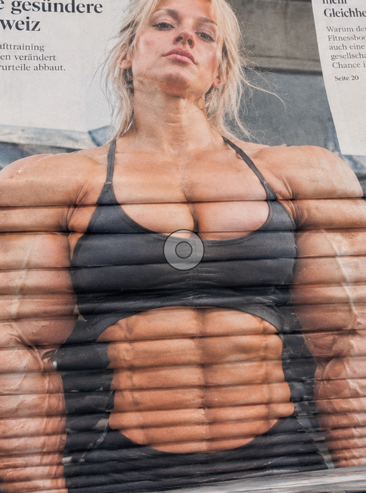
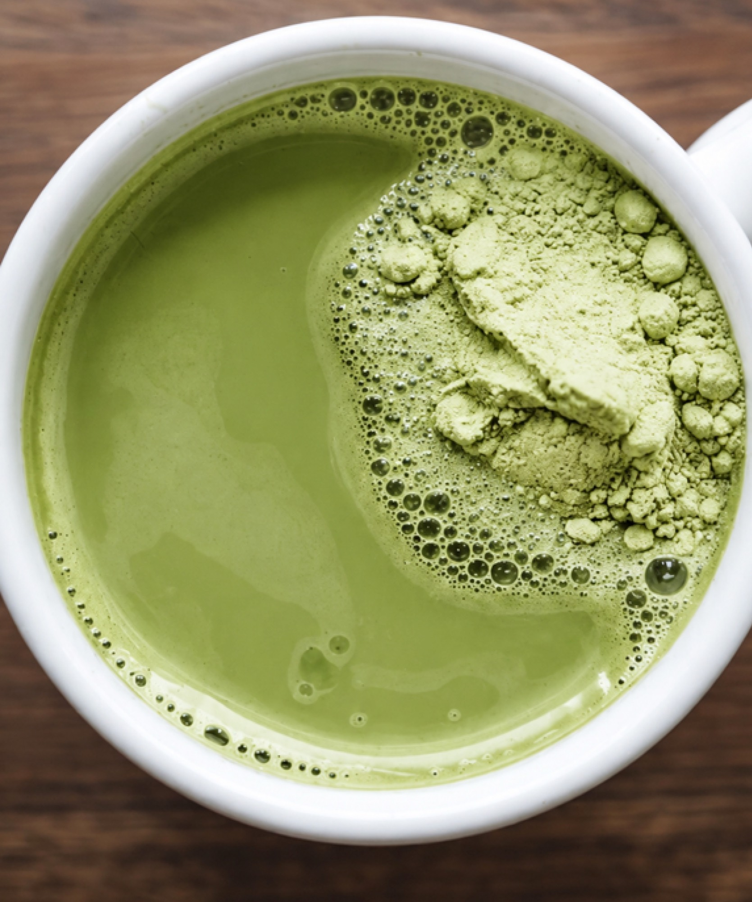
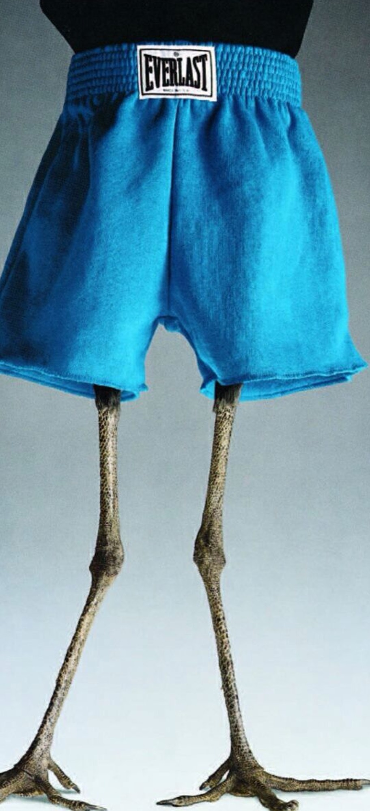
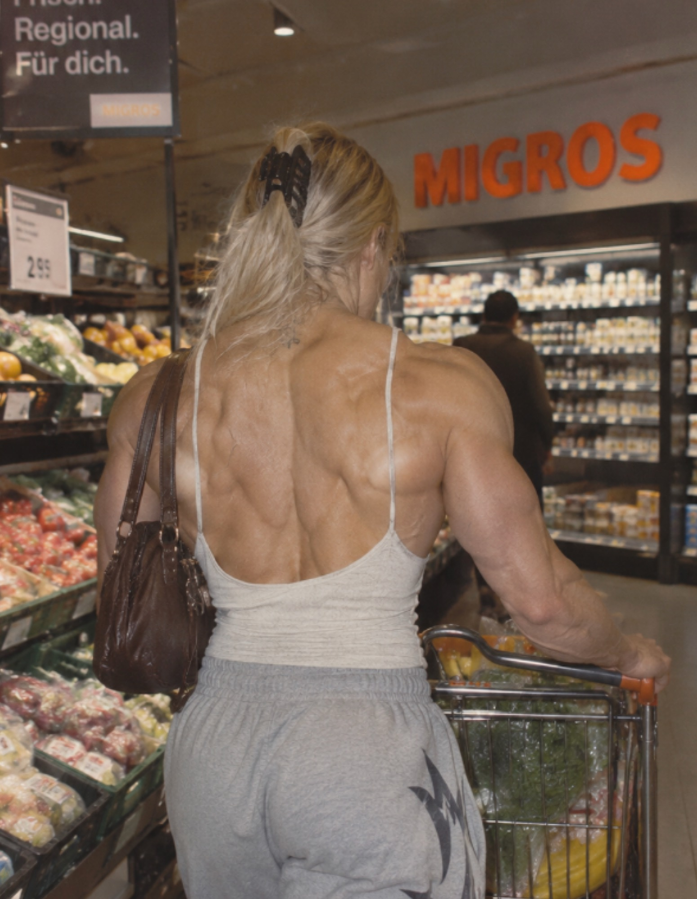
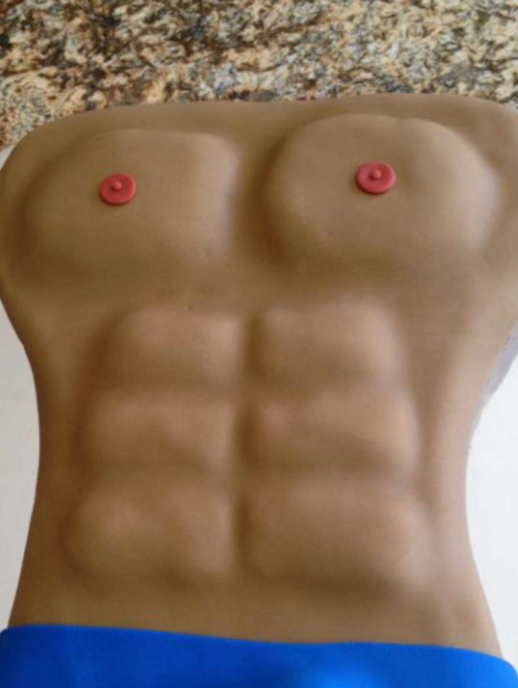

01 — Série photographique
Less Matcha, More Protein
Déranger les habitudes visuelles que nous avons sur le corps féminin, en jouant avec les clichés.
- Public
- Femmes sportives confrontées au regard normatif sur la manière dont leur corps devrait être.
- Lieu
- Des milieux populaires, occupés pleinement.
- Geste
- Des femmes très musclées, là où leur corps dérange.
02
Série
Mise en scène de femmes très musclées dans des milieux populaires, qui occupent pleinement ces espaces. Sous chaque photographie, le verso du lieu : une déclaration nutritionnelle fictive.

01| Énergie | 186 kcal |
|---|---|
| Matières grasses | 3,2 g |
| dont saturés | 0,8 g |
| Glucides | 11 g |
| dont sucres | 6,4 g |
| Fibres | 1,2 g |
| Protéines | 28 g |
| Sel | 0,42 g |

02| Énergie | 161 kcal |
|---|---|
| Matières grasses | 4,1 g |
| dont saturés | 1,6 g |
| Glucides | 9 g |
| dont sucres | 7,8 g |
| Fibres | 0,2 g |
| Protéines | 22 g |
| Sel | 0,61 g |

03| Énergie | 149 kcal |
|---|---|
| Matières grasses | 1,4 g |
| dont saturés | 0,3 g |
| Glucides | 3 g |
| dont sucres | 0,6 g |
| Fibres | 0,4 g |
| Protéines | 31 g |
| Sel | 0,18 g |

04| Énergie | 122 kcal |
|---|---|
| Matières grasses | 0,9 g |
| dont saturés | 0,2 g |
| Glucides | 2,4 g |
| dont sucres | 0,8 g |
| Fibres | 0,3 g |
| Protéines | 26 g |
| Sel | 0,11 g |

05| Énergie | 281 kcal |
|---|---|
| Matières grasses | 8,6 g |
| dont saturés | 2,4 g |
| Glucides | 22 g |
| dont sucres | 8,1 g |
| Fibres | 4,8 g |
| Protéines | 29 g |
| Sel | 1,05 g |
| Énergie | 273 kcal |
|---|---|
| Matières grasses | 7,2 g |
| dont saturés | 2,9 g |
| Glucides | 34 g |
| dont sucres | 28 g |
| Fibres | 0,1 g |
| Protéines | 18 g |
| Sel | 0,33 g |
03
Projet
Une série qui inverse le regard habituellement posé sur le corps féminin.
Less Matcha, More Protein détourne les codes du wellness et de la musculation en montrant des femmes musclées dans des milieux populaires, là où leur corps dérange.
- Public
- Femmes sportives confrontées au regard normatif sur la manière dont leur corps devrait être.
- Geste
- Mise en scène de femmes très musclées dans des milieux populaires, qui occupent pleinement ces espaces.
- Mesure
- Les chiffres de la balance sont simulés. Ils ne décrivent aucune personne de la série.
04
Équipe
- Graphisme & site
- Vladislav vladislav et Anaïs Polo
- Photographie
- Lucie et Dahui
ECAL — 3e année, transversal
Système
- Artific texte
- Great Vibes fioritures
- IBM Plex Mono mesures
- Gris #D9D9D9
- Noir #959595
- Signal #B7FF00